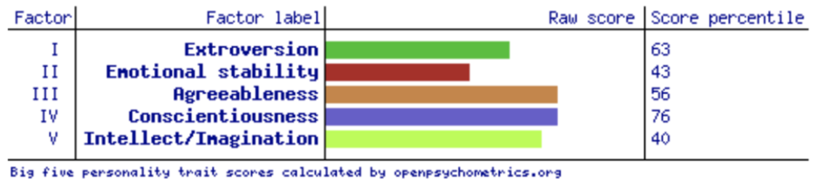

I am in my final semester of Bachelor of Applied Science (Psychology). I am Chinese by ethnicity and was born in Malaysia then moved to Singapore when I was 11. I enjoy reading, going to the gym and cooking in my free time. I have no IT experience. I think there's always added value when you learn new things, especially outside of your usual area of expertise. As I am studying psychology, we don't learn anything IT related. I can definitely see the value of IT in terms of creating a mental health app, or even my own website for clinical practice and even how psychology can inform IT in terms of personalization in user experience.
hese test results could help the group understand how and why I go about things a certain way, which would reduce misunderstandings. It also increases efficiency as everyone in the group understands each other's learning styles and personalities.
